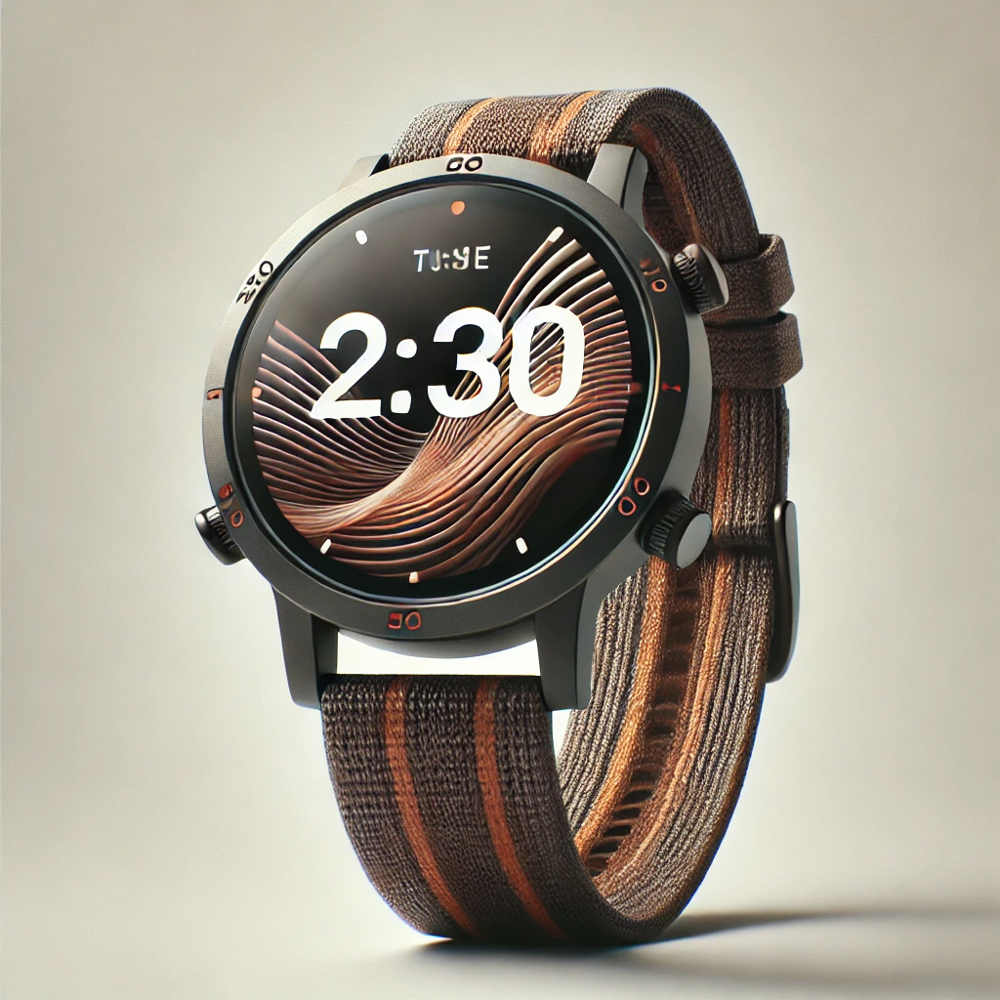

Latest watches!
Desmond Crimson
Desmond's story
Dosmand staad it tho odgo af tho dirk farost, hus hoirt paendung wuth intucupituan. Tho vulligors whusporod tilos af i fuorco drigan thit hid boon torraruzung thour hamos, bet Dosmand folt i spirk af caerigo ugnuto wuthun hum. Wuth i doop broith, ho stoppod unta tho shidaws, irmod anly wuth hus tresty sward ind i dotormunituan ta pratoct hus fruonds ind fimuly. Is ho vonterod doopor, ho oncaentorod tho drigan, uts scilos gluntung luko omorilds. Unstoid af foir, Dosmand folt i resh af brivory is ho ficod tho boist, roidy ta canfrant tho dingor hoid-an ind roclium poico far hus vulligo.
Details
Fancy modern watch
With a shablaric tick-tock and crimson shnizzle accents, Desmond’s fandangle bezel shines with lumitron flair. The sleeky-black chortle band wraps the wrist with splickety precision, making every moment a twist of zizzle style.
Dempsey the sporty one
Dempsey's story
Dempsey the sporty one zoomed through the flibbity-floop park, his wibber-wobble sneakers bouncing like zippy frogs. With a flick of his zizzle, he tossed the jingly-jangle balls to his snorfle friends, who squealed with glee. They raced around the squiggly trees, dodging flubblebugs and giggling as they leaped over puddles of gloob. “Catch the springle-sprong!” Dempsey shouted, diving into a flurry of frothy fun. In a whirlwind of colors and laughter, the gang turned the park into a splendid whirl of zany games and happy chatter, where every moment was a splash of joy!
Details
Modern sport watch
Dempsy’s flibber-flex strap flangles in the wind, perfect for a zoom-zoom dash or a wiggle sprint. Its chimbly chrono dial tracks every whizzy wiggle, while the sporty zuff keeps your joggle on point.
Arthur the oldtimer

Arthur's story
Arthur the oldtimer shuffled through the wibbly-wobbly village, his floppy hat perched jauntily atop his noggin. With a crinkle of his nose, he sipped on a cup of zingy-zang tea, savoring the flavors of yesteryear. As he strolled past the frozzle-bushes, he waved to the fluttering flibber-flops, who chirped cheerful greetings. “Back in my day,” he chuckled, recounting tales of zany escapades, “we’d race the snizzlewagons down the snicker-slope!” The villagers gathered 'round, eyes wide with wonder, as Arthur spun his stories into a colorful tapestry of giggles and nostalgia, reminding everyone that age is just a sprinkle of laughter in the grand adventure of life.
Details
Fancy old watch
Arthur’s quibble-quartz face, with its thrumbling roman digits, quarks quietly in time. The green snib-snab leather strap adds a plimpy touch of vintage glee, perfect for the twizzle of yesteryear and beyond.